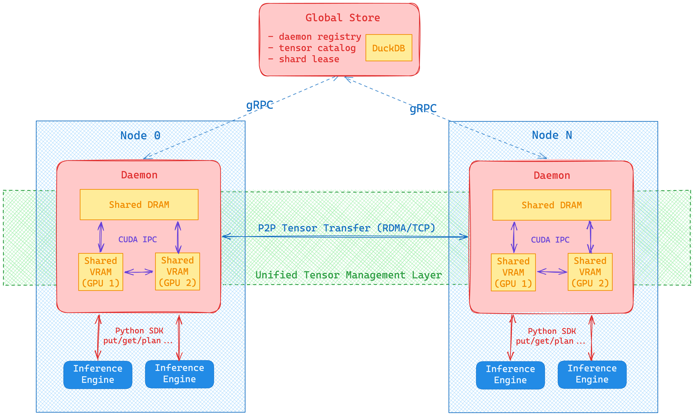

Architecture Overview¶
This document provides a high-level overview of the distributed artifact storage system's architecture. For detailed information about specific components, please refer to the dedicated guides.
Related architecture docs:
- docs/architecture/artifact-views-and-retrieval.md
- docs/architecture/view-replicas-and-assembly.md
System Architecture¶

The system comprises a control plane (Global Store), a data plane (Store Daemons), and clients (User Process Workers) working together to provide efficient artifact storage and serving across a cluster:
graph TD
subgraph "Control Plane"
GS[Global Store<br/>Metadata & Coordination]
end
subgraph "Data Plane"
SD1[Store Daemon 1<br/>Artifact Storage & Serving]
SD2[Store Daemon 2<br/>Artifact Storage & Serving]
SDN[Store Daemon N<br/>Artifact Storage & Serving]
end
subgraph "Clients"
C1[Inference Worker 1]
C2[Inference Worker 2]
CN[Inference Worker N]
end
GS -.->|gRPC<br/>Metadata| SD1
GS -.->|gRPC<br/>Metadata| SD2
GS -.->|gRPC<br/>Metadata| SDN
SD1 <-->|RDMA/TCP<br/>Artifact Transfer| SD2
SD2 <-->|RDMA/TCP<br/>Artifact Transfer| SDN
SD1 <-->|RDMA/TCP<br/>Artifact Transfer| SDN
C1 -->|CUDA IPC| SD1
C2 -->|CUDA IPC| SD2
CN -->|CUDA IPC| SDNCore Components¶
1. Global Store¶
Role: Centralized metadata service and coordination layer
- Responsibility: Manages artifact registry, replica locations and per-chunk directory metadata, coordinates transfers, and records variant/view metadata (view specs, view hash, partial leaf digests)
- Technology: gRPC service with DuckDB persistence
- Key Feature: Artifact data never flows through Global Store — only metadata (including chunk directory,
remote_memory_keys/buffer_sizes, and optionalverification_jsonfor key‑point validation) - Load selection guardrails: Transport selection filters by
workers.accepting_new_requestsand recent heartbeat freshness (heartbeat_timeout_ms) before applying replica priority. - Variant state:
ViewStateServicepersists view registrations and leaf digests so daemons can mark view residency and publish verification state. - Documentation: Global Store Development Guide
2. Store Daemon¶
Role: Distributed artifact storage and serving engine
- Responsibility: Stores artifacts locally, serves them to clients, handles P2P transfers
- Technology: C++ service with gRPC interface (high-performance StoreEngine core)
- Key Feature: Zero-copy GPU memory sharing via CUDA IPC
- Runtime wiring:
RuntimeEnvboots aRuntimeContextthat owns the device manager, pinned buffer pool, communication manager, metrics collector, Global Store client, and ingestion event hub. The gRPC surface stays thin; lifecycle/telemetry is driven by the runtime modules rather than ad‑hoc engine wiring. - Ingestion pipeline:
IngestionRuntimedelegates toMaterializationFacade, which runs the stagedIngestionPipeline(SourceAdapter → MetadataStage → AllocationStage → VerificationStage → HandleStage). MetadataStage rebuilds or fetches canonical indices (from disk or Global Store for variants), plans views, and enforces descriptor schema v3. AllocationStage handles eviction and retries for P2P GPU loads; VerificationStage enforcesverification_jsonkey‑point checks and optional full digests, and computes view hashes when configured. - P2P orchestration:
MaterializationServiceinvokesMaterializeOrchestratorforAUTOmode. The orchestrator: - Respects
SourcePolicy(SourcePreferenceplus allow‑flags). Disk‑first uses daemon-resolved disk source bindings (managed shared-disk or local import);PREFER_P2Prequires a canonicalartifact_id, and allow flags gate P2P/disk fallback. - Tries view-aware transports first (
request_view_transport) and falls back to canonical transport when unsupported. - Completes the granted transport even on failure, then falls back to disk when a daemon-resolved disk source is available.
- Builds
P2PSourcewith remoteverification_jsonand memory registration info so VerificationStage can validate the transfer. - Auto-publish: Every ingestion run mints a
publish_context_id; completion events flow through the ingestion event hub intoMetadataGateway, which registers replicas (and variant residency) with the Global Store. Explicit registration calls from the orchestrator reuse the same context soMetadataGatewaydedupes double-publishes cleanly. - Documentation: Store Daemon Architecture
See also: Store Daemon (C++) Internals — thin gRPC layer over the StoreEngine with session/ref tracking, transport locks, lifecycle management, and background sweepers.
3. User Process Worker¶
Role: PyTorch client process accessing artifacts
- Interface: Uses the handle-first facade (
tensorcast.artifact(...).tensor_dict/.tensor_into) backed by the shared Store to request artifacts via daemonMaterializeReplica/MaterializeIntoTargetwithArtifactSelection(RFC‑0017). - Memory Access: Maps CUDA IPC handles for zero‑copy GPU access; falls back to RAM/DISK as needed
- Lifecycle: Confirms, references, and unloads replicas via daemon RPCs
- Lazy Handles:
tensorcast.artifact(...)returns a store-bound handle that exposes metadata (tensor_names,describe) and selective tensor fetch; it surfacesFAILED_PRECONDITIONif used afterStore.close(). - Disk-backed Handles:
tensorcast.from_disk(path)routes through the daemon import RPCs (ImportArtifactFromPath/ImportArtifactFromPathStream). Import is reference-only registration for payload bytes, may backfill metadata sidecars such asartifact_descriptor.json/ safetensorstensor_index.jsonon first import, returnsartifact_id+ canonical index bytes + generation, and seeds the SDK cache for reuse across materialization, views, and unloads. - Metadata Cache: A process-wide
ArtifactCachestores canonical indices (default TTL 600s, max 1000 entries) to avoid repeated daemon lookups. Tunables:TENSORCAST_STORE_INDEX_CACHE_TTL_SECONDS,TENSORCAST_STORE_CACHE_MAX_ENTRIES. - View Composition:
.view()/.subset()/.slice()derive child handles via a pure composer (no daemon RPCs) with per-handle view-index caches so repeated calls avoid recomputing planners. - Batching & Async:
BatchContextbatches sync fetches; async.tensor_async()/.tensor_dict_async()coalesce viaMaterializationBatcheron the store event loop. - Prefetch Operations:
artifact.prefetch(device=..., ctx=...)returns anOperation[PrefetchedReplica]withstatus/wait/cancelsemantics (defaults toNO_LEASEfor process-independent daemon-owned cache warm).
Key Design Principles¶
1. Separation of Control and Data Planes¶
- Control Plane (Global Store): Handles metadata, coordination, and decision-making
- Data Plane (Store Daemons): Handles actual artifact storage and high-speed transfers
- Benefit: Scalability and performance - metadata operations don't interfere with data transfers
2. Zero-Copy Artifact Serving¶
- Artifacts are loaded once into GPU memory by Store Daemon
- Multiple client processes access the same GPU memory via CUDA IPC handles
- Eliminates redundant memory copies and reduces GPU memory usage
3. Peer-to-Peer Artifact Transfers¶
- Artifacts transfer directly between Store Daemons
- Uses RDMA for high-speed transfers when available, falls back to TCP
- Global Store coordinates transfers but doesn't handle artifact data
4. High Availability¶
- Global Store uses persistent database for recovery
- Store Daemons can reconnect and resynchronize state
- System designed for eventual consistency
- Documentation: High Availability Design
Artifact Load Paths (Selection-first)¶
P2P‑first Loading (Preferred)¶
Client Store Daemon Global Store
| | |
|-- ResolveKeyMapping(key) --------------->| |
|<---------------- artifact_id ------------| |
|-- MaterializeReplica(selection, device)->| |
| |-- Request Transport ------------>|
| |<------ Transport Grant ----------|
| | (RDMA/TCP transfer from peer) |
| |-- Complete Transport ----------->|
| |<------ Confirmation -------------|
|<- ALLOCATED + CUDA IPC handle -----------| |
Disk Fallback¶
Client Store Daemon Global Store
| | |
|-- ResolveKeyMapping(key) --------------->| |
|<-- artifact_id (+ disk location) --------| |
|-- MaterializeReplica(selection, device)->| |
| | (Load from local disk) |
| |-- Register Local Replica ------->|
| |<------ Replica ID ---------------|
|<- ALLOCATED + CUDA IPC handle -----------| |
Variant-aware requests carry hints.variant.view_id; the daemon attempts a view transport first, falls back to canonical routing when unsupported, and registers view residency after ingestion via the shared publish context.
Load Balancing & Concurrency¶
- Prioritization: GPU > RAM > DISK, then by per‑replica load ratio; replicas are only eligible when the worker’s last heartbeat is fresh,
accepting_new_requestsis true, and the worker is active (inactive_atunset). - Each replica tracks
max_concurrencyandcurrent_requests; selection is atomic - Daemon enforces transport locks; engine limits per‑GPU active transfers (1/session)
- Further reading: P2P Transfer Strategies
VRAM Leased-In-Place¶
LIP adds a replica mode where a producer process exposes its existing GPU memory to the daemon with a time‑bounded lease, avoiding copies into daemon‑owned VRAM at Commit.
- Registration: Begin with
LeaseOptions.in_place=trueandowner_pid; Commit computesmi2:by linearizing lease segments with PAD=0. - Local consumption: same‑device consumers are rejected; cross‑device consumers are served via a D2D copy into a new coalesced replica on the target GPU.
- P2P: staged‑only (no direct MR on leased memory); sender stages GPU→host‑pinned buffers before network.
- Lifecycle: leases require KeepAlive at TTL/2 cadence post‑Commit; TTL expiry removes from selection; leases auto‑revoke when
owner_pidexits. - Verification: lightweight KEY_POINTS metadata is generated and stored at Commit for later offer attachment.
This preserves staged-only safety and the zero-copy invariant for daemon-owned coalesced replicas while enabling low-latency in-place sharing and fast cross-device replication.
Store Session Observability¶
The Store client (Python SDK) follows Design 0010 and exports OpenTelemetry signals for every verb:
- Spans:
Store/Register,Store/Put,Store/Get, andStore/GetIntowrap daemon RPC sequences and carry low-cardinality attributes (tc.store.daemon,tc.store.session_id,tc.store.status, retry attempt counts, fallback decisions). Retry cycles addstore.retryevents so traces surface deadline churn without exploding span fanout. - Metrics: Histogram
tc_store_operation_latency_secondsplus counterstc_store_operation_errors_totalandtc_store_operation_retries_totalrecord latency, failures, and retry attempts per verb withverbanddaemonlabels. Metrics emit only when OpenTelemetry is configured, keeping zero-cost semantics otherwise. - Cardinality guardrails: High-cardinality attributes (replica UUIDs, disk paths, request UUIDs) are filtered by default to keep backend cost predictable. Enable
TC_OTEL_ALLOW_HIGH_CARDINALITY_ATTRS=1locally to debug with full attribute sets.
Keepalive activity and cancellation outcomes are captured inside the same spans so operators can correlate lease churn, fallback causes, and daemon retries on a single trace.
Store Session Registry¶
The Python SDK persists lightweight session manifests under ~/.tensorcast/store_sessions/<session_id>.json. Each file records the daemon endpoint, client PID, capabilities summary (mem_pool_bytes, tx_slice_bytes, transfer slice size), plus rolling counts of active leases and pending futures. Entries are refreshed whenever a verb executes, ensuring operators can audit abandoned leases or hung futures even if the client process exits unexpectedly.
Running uv run tensorcast daemon status now prints this registry after the daemon health report:
$ uv run tensorcast daemon status
...
==============================
Store Sessions
==============================
Session ID: 20251001-abcd
Daemon Endpoint: 127.0.0.1:50052
PID: 42281
Status: ACTIVE
Created: 2025-10-03 09:12:14
Last Activity: 2025-10-03 09:15:41
Active Leases: 2
Pending Futures: 0
Capabilities:
mem_pool_bytes: 4294967296
tx_slice_bytes: 67108864
Operators can prune stale entries manually or rely on the CLI output to identify orphaned sessions before triggering lease revocation from the daemon.
Store Session Rollout & Backout¶
Rollout procedure¶
- Stage the release: Deploy the aligned Global Store migration, Store Daemon binary, and Python SDK wheel to staging. Check the triplet by running
uv run tensorcast --versionand confirm the staged daemon advertises the expected build inuv run tensorcast daemon status. - Run integration validation: Execute
uv run pytest tests/python/test_register_lease_in_place_helper.py,uv run pytest tests/python/test_register_vram_leased_and_dvmp_stream.py, andbazel test //daemon:session_lifecycle_test --test_env=TENSORCAST_CUDA_BACKEND=fakeagainst the staged environment. These suites cover lease timers, LIP flows, and daemon session lifecycle with the Store-centric API. - Observe telemetry: Monitor the OpenTelemetry metrics from Design 0010 while gradually shifting traffic. Track
tc_store_operation_latency_seconds,tc_store_operation_errors_total, andtc_store_operation_retries_totalper verb in Grafana to ensure latency, error, and retry rates stay within historical limits. - Promote to production: Roll the SDK wheel to production workers and restart clients. Use
uv run tensorcast daemon statusto verify Store sessions register with accurate lease counts before decommissioning any remaining legacy helper usage. - Reference the release checklist: Follow the detailed steps in the Store Session Release Checklist to coordinate broader launches and communications.
Backout procedure¶
- Immediate revert: If regressions appear, redeploy the previous SDK wheel and daemon binary from before the Store-session rollout. The persisted session manifests under
~/.tensorcast/store_sessionsare backward compatible and will be ignored by older clients. - Post-revert validation: Re-run the integration suites above to confirm behaviour is restored, and watch
tc_store_operation_errors_totalto verify failure rates return to steady state. - Communication loop: Notify downstream teams when rollout halts, capture the blocking issues, and resume after fixes pass staging validation.